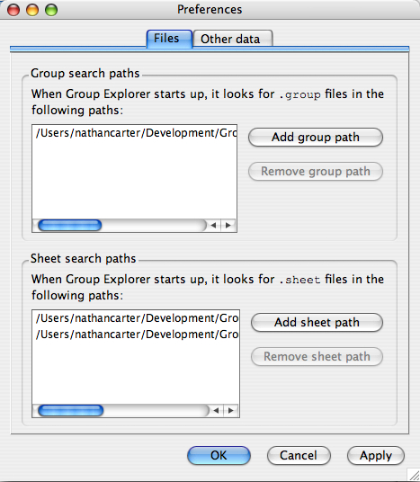
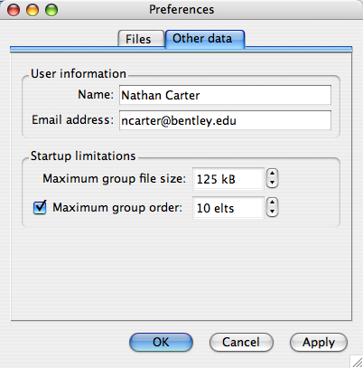

The options window (or preferences window) has two tabs at the top, separating the options into two categories, which are addressed separately below. The OK and Cancel buttons at the bottom of the window work as usual; the Apply button puts all of your recent changes into effect without closing the options window.
An options window open to the files tab looks like the following illustration.

This section determines what directories on your computer are searched for group definition files when Group Explorer starts up. Several relevant facts are worth noting here.
.group are considered group definition files. Other files in the search paths are irrelevant. Furthermore, the search paths are searched recursively. That is, all subdirectories of any path you give are searched.This section is completely analogous to the Group search paths section, except it looks for sheet definition files, which end with the extension .sheet. Two exceptions to the Group search paths are worth noting.

This information will be embedded into your configuration file. This is intended to be useful for future applications that will allow users to share settings (such as notes on groups, naming schemes, etc.) and sheets. The information can be used to track who kept what notes, etc. However, so far such features have not been implemented. The user information is therefore a formality at this point.
These limitations are extremely important for protecting Group Explorer from getting bogged down loading large or complicated groups, and therefore keeping its response time quick. Many computations are done every time a group is loaded and placed in the group library. If dozens of groups, or just a few very large groups, are loaded, the startup time for the software can be quite long. For this reason, you may filter your group library using two parameters. These parameters apply to all groups in the search paths discussed above.
The quickest way for Group Explorer to skip over large groups is to ignore ones with too large a file size on disk. This way, Group Explorer doesn't need to waste precious startup milliseconds parsing the content of the file (or even opening the file for reading). This is a crude precaution, but a necessary one, which is why you cannot turn it off! (You may set the threshold ridiculously high, but you cannot stop Group Explorer from using some threshold.) Simply the parsing of an enormous group data file into memory can take quite some time, and this helps protect from that.
This is the more useful of the two filters on group data files. To determine a group's order, Group Explorer only needs to read the first 10-20 lines of the file, which can be done fairly quickly, regardless of the file's actual size or complexity. And it is large group files that slow Group Explorer down. Thus you can, for example, keep a very extensive group library, containing potentially dozens of large groups that would literally take minutes to load (!), and yet not load them the majority of times that you use the software, by keeping this threshold at 10 or 20. Thus most of your use of Group Explorer can involve a quick startup, but occasionally when you need to explore large groups, change this threshold and put up with the extensive computational effort required to prepare Group Explorer to help you explore those groups.
In the future, Group Explorer may have a general facility for pre-computing a lot of the complex information about a group and storing it on disk, so that it need not be computed every time you run the software, unless group files change. But this technology is not currently implemented.
Quick help links:
Contents | Getting Started | Tutorials | User Manual | Miscellaneous Reference
GE terminology | Help on help